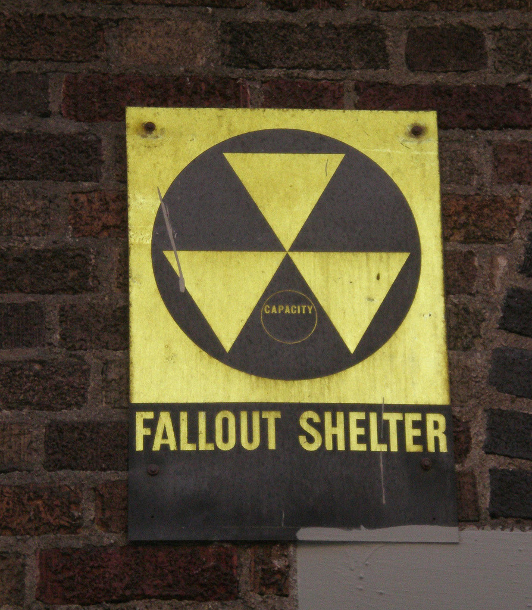

We had a sign like this on the outside of our apartment building. Which was odd, because a normal, unsealed, dirty, disgusting basement, isn’t where I’d imagine you’d want to try to avoid a nuclear shockwave. Of course, as a kid I had no idea what the significance of the fallout shelter was, but the sign was good for one thing: the circle around “capacity” was just about tennis-ball-sized, and so made for an excellent imaginary catcher’s mitt target. Bottom of the ninth, two out, the intrepid relief pitcher steps onto the mound…